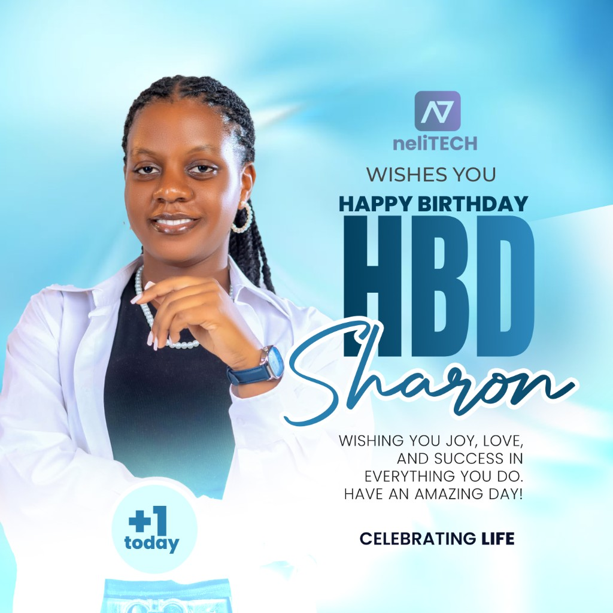

Experienced Network and Systems Administrator with a proven record in ICT infrastructure management, end-user support, and digital transformation across NGO and educational environments. Skilled in designing, deploying, and maintaining enterprise networks—including routing, switching, VLAN segmentation, VPN connectivity, and network security—while administering Linux and Windows server environments. Proficient in Microsoft 365 administration, database management, Docker-based deployments, and comprehensive backup and disaster recovery planning. Committed to service excellence, I deliver reliable ICT operations, clear technical documentation, and responsive helpdesk support that enable organizations to achieve their humanitarian and development missions.
0 ICT Projects Delivered
Educational background and achievement-focused ICT roles across NGOs, educational institutions, and enterprise environments
Managing IT systems and infrastructure, implementing cybersecurity measures, and providing technical support. Developing and maintaining company digital assets, coordinating technology-driven projects, and ensuring system reliability and security.
Comprehensive degree program focusing on information systems, database management, network security, and software development. Strong academic performance with active participation in tech-related student activities and ICT leadership roles.
Completed A-levels with focus on Arts, Science subjects and ICT. Participated in technology clubs and leadership roles that developed both technical and soft skills.
Completed O-levels with Credits in sciences and mathematics. Developed strong foundation in analytical thinking and problem-solving skills.
Technical and operational capabilities aligned with enterprise ICT infrastructure and humanitarian organization requirements
Selected infrastructure, systems, and digital transformation initiatives demonstrating technical leadership and measurable impact
Objective: Design and implement a secure, scalable enterprise network to support NGO operations across multiple office and field locations.
Technologies Used: Cisco/MikroTik routers and switches, VLAN segmentation, DHCP/DNS servers, site-to-site VPN, firewall appliances, and network monitoring tools.
Responsibilities: Led network architecture design, configured routing and switching infrastructure, implemented VLAN policies, managed VPN tunnels, and established network security controls and documentation.
Outcomes and Impact: Achieved reliable connectivity for 50+ users, reduced network downtime by 40%, and established a documented network topology that supports future expansion and audit compliance.
Objective: Develop an intelligent AI-powered helpdesk system to automate user support queries and improve response times for ICT service requests.
Technologies Used: Python, REST APIs, Docker, Linux server, PostgreSQL database, and web-based chat interface integration.
Responsibilities: Architected the system infrastructure, deployed containerized services on Linux, configured database backends, integrated API endpoints, and managed server security and uptime monitoring.
Outcomes and Impact: Reduced average first-response time for common ICT queries by 60%, freed helpdesk staff to focus on complex incidents, and created a scalable knowledge base for recurring support issues.
Objective: Build a digital attendance tracking platform for educational institutions to replace manual registers and enable real-time reporting.
Technologies Used: Web application stack, MySQL/PostgreSQL database, Linux hosting environment, and secure user authentication modules.
Responsibilities: Designed the database schema, deployed the application on Linux servers, configured user roles and access controls, and provided training and technical support to administrators.
Outcomes and Impact: Eliminated manual attendance errors, enabled instant reporting for 500+ students across multiple classes, and improved administrative efficiency for school management teams.
Objective: Modernize application hosting by migrating legacy services to containerized Linux environments for improved reliability and maintainability.
Technologies Used: Ubuntu/CentOS Linux, Docker, Docker Compose, Nginx reverse proxy, SSL/TLS certificates, and automated backup scripts.
Responsibilities: Provisioned and hardened Linux servers, containerized web and database services, configured reverse proxy and SSL, implemented scheduled backups, and documented deployment procedures.
Outcomes and Impact: Reduced deployment time for new services by 70%, improved system portability across environments, and established reproducible infrastructure-as-code practices for the organization.
Core ICT infrastructure and systems administration capabilities developed through hands-on NGO and enterprise experience
Event posters, campaigns, branding, and promotional designs

Organizations and businesses I've built websites for
Technical consultancy and project delivery demonstrating problem-solving capabilities across diverse organizational contexts
Structured ICT governance practices ensuring accountability, compliance, and operational continuity
Maintained comprehensive ICT asset registers tracking hardware serial numbers, warranty status, assigned users, and disposal records. Conducted periodic audits to reconcile physical inventory with digital records, supporting budget planning and donor reporting requirements.
Established structured incident logging and escalation procedures with severity classification, response time targets, and root-cause analysis. Documented resolution steps to build institutional knowledge and reduce repeat incidents across the ICT environment.
Drafted and implemented acceptable use policies, password management standards, and data handling guidelines aligned with organizational values and international best practices. Facilitated staff orientation sessions to ensure policy awareness and compliance.
Designed and executed automated backup schedules for servers, databases, and critical file shares with offsite replication. Tested restoration procedures quarterly to validate recovery time objectives and ensure business continuity readiness.
Managed full user lifecycle provisioning including onboarding, role-based access assignment, periodic access reviews, and secure offboarding. Enforced least-privilege principles across Active Directory, Microsoft 365, and application-level accounts.
Produced and maintained network topology diagrams, server configuration records, IP address allocations, and standard operating procedures. Ensured documentation remained current following infrastructure changes to support knowledge transfer and audit readiness.
Measurable outcomes demonstrating readiness for senior ICT infrastructure roles in international humanitarian organizations
Contact me now to get your project done to your satisfaction.
Available for ICT infrastructure roles, consultancy, and collaborations. Based in Juba-South Sudan.
Juba-South Sudan
{kind=link}
{kind=link}
{kind=link}
{kind=link}
{kind=link}
{kind=link}
{kind=link}
{kind=link}
{kind=link}
{kind=link}
{kind=link}
{kind=link}
{kind=link}